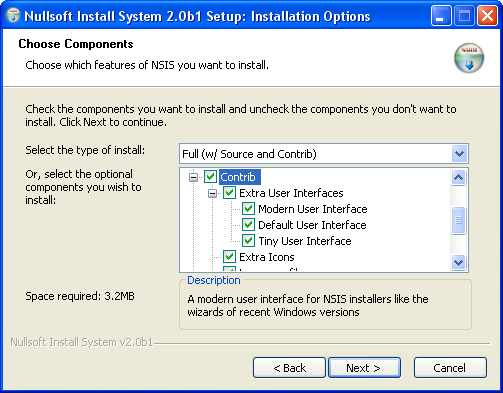
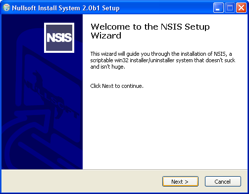

NSIS 2 makes it is possible to create installers
with a custom user interface. The Modern UI is an interface with a
style like the wizards of recent Windows versions.
This new interface also features new pages
(Welcome, Finish, Start Menu) and a description area on the components
page. The interface and the graphics can be customized using the
provided settings.
Using the Modern UI macros and language files,
writing scripts with a modern interface is easy. This document contains
information about writing Modern UI scripts and a reference of all
settings.
Important: Because the Modern
UI has its own macro system, its own default settings and a lot of
new features, the interface configuration works differently. So you
should not use commands like Icon, BrandingText etc.


The Modern UI has a macro system, so all the code to
control the interface has already been written for you.
If you want to start a new Modern UI script or upgrade
an older script with the Classic UI, follow the steps below.
Taking a look at the example scripts
will also help you to learn more about the Modern UI.
Most defines (i.e. MUI_COMPONENTSPAGE_SMALLDESC) don't need a value, they are true/false settings.
Others (i.e. MUI_FINISHPAGE_RUN) can be used to define a specific
value.
Parameters are specified in this format:
required (option1 | option2)
[optional]
You should put all parameters in one string for the define:
!define MUI_STARTMENUPAGE_NODISABLE ;No value
!define MUI_FINISHPAGE_RUN "$INSTDIR\Application.exe" ;Value
!define MUI_INSTALLCOLORS "FFFFFF 000000" ;Multiple parameters
!define MUI_LICENSEPAGE_TEXT "$\"Text$\" $\"Buttontext$\"" ;Multiple texts
If you want a certain value (i.e. a text) to be language-specific, set a language string and define
$(LANGUAGESTRINGNAME) as value.
When adding a double quote (") to a Modern UI string, you should always escape it ($\"),
because the Modern UI macros use " to separate parameters.
!include "MUI.nsh"
MUI.nsh is in the Include directory, so you don't have
to specify a path.
!define MUI_PRODUCT "Your Software"
!define MUI_VERSION "1.0"
This information will be used inside the texts for the installer
interface.
Insert the following macros to set the pages you want to use.
The pages will appear in the order you insert them in your script.
You can also insert custom Page commands between the macros to add custom pages.
More info about custom pages...
You can add multiple pages of certain types (for example, if you
want the user to specify multiple folders).
Examples:
!insertmacro MUI_PAGE_LICENSE "License.rtf"
!insertmacro MUI_PAGE_COMPONENTS
Installer Pages
MUI_PAGE_WELCOME
MUI_PAGE_LICENSE text/rtf_file
MUI_PAGE_COMPONENTS
MUI_PAGE_DIRECTORY
MUI_PAGE_STARTMENU
MUI_PAGE_INSTFILES
MUI_PAGE_FINISH
Uninstaller Pages
MUI_UNPAGE_CONFIRM
MUI_UNPAGE_COMPONENTS
MUI_UNPAGE_INSTFILES
To configure a page, you can define the page settings before inserting a page macro.
MUI_PAGE_HEADER_TEXT text
Custom text to display on the header of the page.
MUI_PAGE_HEADER_SUBTEXT text
Custom subtext to display on the header of the page.
MUI_WELCOMEPAGE_TITLE title
Title to display on the welcome page.
MUI_WELCOMEPAGE_TEXT text
Texts to display on the welcome page. Use \r\n for a newline.
MUI_LICENSEPAGE_TEXT text [buttontext]
Texts to display on the inner dialog of the license page. Put quotes around the different texts ($\").
MUI_LICENSEPAGE_TEXT_TOP text
Text to display on the top of the inner dialog of the license page.
MUI_LICENSEPAGE_CHECKBOX
Display a checkbox the user has to check to agree with the license terms.
MUI_LICENSEPAGE_RADIOBUTTONS
Display two radiobuttons to allow the user to choose between accepting the
license terms or not.
MUI_COMPONENTSPAGE_TEXT text [subtext] [subtext2]
Texts to display on the inner dialog of the components page. Put quotes around the different texts ($\").
MUI_DIRECTORYPAGE_TEXT text [subtext]
Texts to display on the inner dialog of the directory page. Put quotes around the different texts ($\").
MUI_DIRECTORYPAGE_VARIABLE variable
Variable in which to store the selected folder
Default: $INSTDIR
Put the code to write the shortcuts (using CreateShortcut) between this macros:
!insertmacro MUI_STARTMENU_WRITE_BEGIN
...create the shortcuts...
!insertmacro MUI_STARTMENU_WRITE_END
When using multiple Start Menu Folder pages, you should also undefine previous StartMenu page
defines and define the values of the page of which you want to write the value, before inserting the
MUI_STARTMENU_WRITE_BEGIN macro.
MUI_STARTMENUPAGE_VARIABLE variable
Variable to store the current Start Menu Folder. Default is $MUI_STARTMENU_FOLDER.
You cannot use this variable in your script (or you should Push/Pop it).
MUI_STARTMENUPAGE_DEFAULTFOLDER folder
The default Start Menu Folder.
MUI_STARTMENUPAGE_NODISABLE
Do not display the checkbox to disable the creation of Start Menu
shortcuts.
MUI_STARTMENUPAGE_REGISTRY_ROOT root
MUI_STARTMENUPAGE_REGISTRY_KEY key
MUI_STARTMENUPAGE_REGISTRY_VALUENAME value_name
The registry key to store the Start Menu folder. The page will use it to
remember the users preference. You should also use it in the uninstaller to
remove the Start Menu folders. Don't forget to remove this key in the
uninstaller.
In the uninstaller, use the MUI_STARTMENU_GETFOLDER macro to get the Start Menu folder:
!insertmacro MUI_STARTMENU_GETFOLDER $R0 ;You can also use another var
Delete "$SMPROGRAMS\$R0\Your Shortcut.lnk"
When using multiple Start Menu Folder pages, you should also undefine previous StartMenu page
defines and define the values of the page of which you want to get the value, before inserting the
MUI_STARTMENU_GETFOLDER macro.
MUI_FINISHPAGE_RUN exe_file
Application which the user can select to run using a checkbox.
You don't need to put quotes around the filename when it contains spaces.
MUI_FINISHPAGE_RUN_PARAMETERS parameters
Parameters for the application to run. Don't forget to escape double
quotes in the value (use $\").
MUI_FINISHPAGE_RUN_NOTCHECKED
Do not check the 'Run program' checkbox by default
MUI_FINISHPAGE_RUN_FUNCTION function_name
Call a function instead of executing an application (define MUI_FINISHPAGE_RUN without parameters).
You can use the function to exectute multiple applications or you can change the checkbox name and
use it for other things.
MUI_FINISHPAGE_SHOWREADME file/url
File or website which the user can select to view using a checkbox.
You don't need to put quotes around the filename when it contains spaces.
MUI_FINISHPAGE_SHOWREADME_NOTCHECKED
Do not check the 'Show Readme' checkbox by default
MUI_FINISHPAGE_SHOWREADME_FUNCTION function_name
Call a function instead of showing a file (define MUI_FINISHPAGE_SHOWREADME without parameters).
You can use the function to show multiple files or you can change the checkbox name and
use it for other things.
MUI_FINISHPAGE_LINK link_text
Text for a link on the which the user can click to view a website or file.
MUI_FINISHPAGE_LINK_LOCATION file/url
Website or file which the user can select to view using the link.
You don't need to put quotes around the filename when it contains spaces.
MUI_FINISHPAGE_NOAUTOCLOSE
Do not automatically jump to the finish page, to allow the user to
check the log.
MUI_FINISHPAGE_NOREBOOTSUPPORT
Disables support for the page that allows the user to reboot the system.
Define this option to save some space if you are not using the /REBOOTOK
flag or SetRebootFlag.
You can add your custom code to the page functions of Modern UI pages.
More info...
Page interface settings apply to all pages of a certain type.
For UI elements that are enabled by default, the default value will be used when a setting
has not been defined.
MUI_UI ui_file
The interface file with the dialog resources. Change this if you have made your own customized UI.
Default: ${NSISDIR}\Contrib\UIs\modern.exe
MUI_UI_HEADERBITMAP ui_file
MUI_UI_HEADERBITMAP_RIGHT ui_file
The interface files with the dialog resource IDD_INST that contains a bitmap control and space for
the header bitmap.
Defaults: ${NSISDIR}\Contrib\UIs\modern-headerbmp.exe,
${NSISDIR}\Contrib\UIs\modern-headerbmpr.exe
MUI_UI_SMALLDESCRIPTION
MUI_UI_NODESCRIPTION
The interface files with a customized dialog resource IDD_SELCOM for a small or no description area.
Defaults: {NSISDIR}\Contrib\UIs\modern-smalldesc.exe, {NSISDIR}\Contrib\UIs\modern-nodesc.exe
MUI_ICON icon_file
The icon of the installer.
Default: ${NSISDIR}\Contrib\Icons\modern-install.ico
MUI_UNICON icon_file
The icon of the uninstaller.
Default: ${NSISDIR}\Contrib\Icons\modern-uninstall.ico
MUI_LICENSEBKCOLOR
(/windows | /grey | (color: RRGGBB hexadecimal))
The background color for the license textbox. Use /windows for the default text background (usually white).
Use the /grey for the standard window background (usually grey).
Default: /windows
MUI_CHECKBITMAP bitmap_file
The bitmap with images for the checks of the component select treeview.
Default: ${NSISDIR}\Contrib\Icons\modern.bmp
MUI_INSTALLCOLORS (/windows |
(foreground color: RRGGBB hexadecimal) (background color: RRGGBB hexadecimal))
The colors of the details screen. Use /windows for the default colors.
MUI_PROGRESSBAR ("" | colored | smooth)
The style of the progress bar. Colored makes it use the MUI_INSTALLCOLORS.
Default: smooth
MUI_HEADERBITMAP bmp_file
Bitmap to display in the white header (recommended size: 150x57 pixels). The NSIS Setup uses the bitmap
${NSISDIR}\Contrib\Icons\modern-header.bmp, but can also make one with your own logo.
MUI_HEADERBITMAP_RIGHT
Display the header image on the right side instead of the left side.
MUI_HEADERBITMAP_NOSTRETCH
Do not stretch the header bitmap to fit the size of the field. Use this option only if you have an
image that does not use the whole space. If you have a full size bitmap that fits exactly, you should
not use this option because the size of the field will be different if the user has a custom DPI setting.
MUI_SPECIALINI ini_file
InstallOptions INI file for the Welcome and Finish page.
Default: ${NSISDIR}\Contrib\Modern UI\ioSpecial.ini
MUI_SPECIALBITMAP bmp_file
Bitmap for the Welcome and Finish page (recommended size: 164x314 pixels).
Default: ${NSISDIR}\Contrib\Icons\modern-wizard.bmp
MUI_SPECIALBITMAP_NOSTRETCH
Do not stretch the bitmap for the Welcome and Finish page to fit the size of the field.
Use this option only if you have an image that does not use the whole space. If you have a full size
bitmap that fits exactly, you should not use this option because the size of the field will be different
if the user has a custom DPI setting.
MUI_BGCOLOR (color: RRGGBBR hexadecimal)
Background color for the header, Welcome- and Finish page.
Default: FFFFFF
MUI_FINISHPAGE_LINK_COLOR (color: 0xBBGGRR hexadecimal)
Text color for the link on the Finish page.
Default: 0x800000
MUI_RTL_UI
Right-to-left interface.
MUI_COMPONENTSPAGE_SMALLDESC
A small description area on the bottom of the page. Use this layout
if you have a lot of sections and don't need large descriptions.
MUI_COMPONENTSPAGE_NODESC
No description area.
MUI_ABORTWARNING
Show a message box with a warning when the user wants to close the installer.
If you want add your own code to functions inserted by the
Modern UI (i.e. the .onGUIInit function and the page functions), create your
own function and let the Modern UI functions call them.
More info...
Insert the Modern UI language files for the languages you are using:
!insertmacro MUI_LANGUAGE "English"
The Modern UI language files load the NLF language files,
so you should not use LoadLanguageFile.
You don't need to edit the language files if you want to customize
some strings. Use defines before you insert the language file:
!define MUI_TEXT_COMPONENTS_TITLE "Your text"
!insertmacro MUI_LANGUAGE "English"
Have a look at the language files for a complete list of all the
string names.
Note: When using different product name (MUI_PRODUCT)
for different languges, !undef MUI_PRODUCT after inserting a language file (or use a language
string).
You can customize the fonts for a language using the following defines before inserting
a language:
MUI_FONT_HEADER font_name
MUI_FONTSIZE_HEADER font_size
MUI_FONTSTYLE_HEADER weight [/ITALIC] [/UNDERLINE] [/STRIKE]
The font for the title in the header.
MUI_FONT_TITLE font_name
MUI_FONTSIZE_TITLE font_size
MUI_FONTSTYLE_TITLE weight [/ITALIC] [/UNDERLINE] [/STRIKE]
The font for the title on the Welcome and Finish page.
Note: Page texts can be changed using page settings.
If you want the installer to display a language selection dialog
(have a look at the
MultiLanguage.nsi example), insert the MUI_LANGDLL_DISPLAY macro in .onInit:
Function .onInit
!insertmacro MUI_LANGDLL_DISPLAY
FunctionEnd
To customize the language selection dialog, use these defines:
MUI_LANGDLL_WINDOWTITLE text
The window title of the language selection dialog.
MUI_LANGDLL_INFO text
The text on the language selection dialog.
MUI_LANGDLL_REGISTRY_ROOT root
MUI_LANGDLL_REGISTRY_KEY key
MUI_LANGDLL_REGISTRY_VALUENAME value_name
The registry key to store the language. The users preference will be remembered.
You can also use it in the uninstaller to display the right language. Don't forget
to remove this key in the uninstaller.
In the uninstaller, insert the MUI_UNGETLANGUAGE macro in un.onInit to get the stored language
preference:
Function un.onInit
!insertmacro MUI_UNGETLANGUAGE
FunctionEnd
MUI_LANGDLL_ALWAYSSHOW
Always show the language selection dialog, even if a language has been stored in the registry.
The language stored in the registry will be selected by default.
The descriptions of sections will be displayed on the
components page, when the user hovers the mouse over a section.
If you don't want to use descriptions, use the MUI_COMPONENTSPAGE_NODESC
setting.
To set a description for a section, you have to add an
additional parameter to the Section commmand with a name for the define
that should contain the section number:
Section "Section Name 1" Section1
...
SectionEnd
Use these macros to set the descriptions:
LangString DESC_Section1 ${LANG_ENGLISH} "Description of section 1."
LangString DESC_Section2 ${LANG_ENGLISH} "Description of section 2."
!insertmacro MUI_FUNCTION_DESCRIPTION_BEGIN
!insertmacro MUI_DESCRIPTION_TEXT ${Section1} $(DESC_Section1)
!insertmacro MUI_DESCRIPTION_TEXT ${Section2} $(DESC_Section2)
!insertmacro MUI_FUNCTION_DESCRIPTION_END
For the uninstaller, use the MUI_UNFUNCTION_DESCRIPTION_BEGIN
and MUI_UNFUNCTIONS_DESCRIPTION_END macros
If you are using BZIP2 compression, you might need to
insert ReserveFile commands. More info...
If you want add custom pages to your installer, you should insert your
own page commands between the page macros:
!insertmacro MUI_PAGE_WELCOME
Page custom FunctionName ;Custom page
!insertmacro MUI_PAGE_COMPONENTS
For the uninstaller:
!insertmacro MUI_UNPAGE_CONFIRM
UninstPage custom un.FunctionName ;Custom page
!insertmacro MUI_UNPAGE_INSTFILES
InstallOptions is a plug-in that displays custom pages that you can create
using INI files.
Have a look at the
InstallOptions documentation for info about creating InstallOptions INI files.
First, you need to extract your InstallOptions INI
File in the .onInit function (un.onInit for the uninstaller) using
the MUI_INSTALLOPTIONS_EXTRACT macro:
Function .onInit
!insertmacro MUI_INSTALLOPTIONS_EXTRACT "ioFile.ini"
FunctionEnd
If your INI File is located in another directory, use
MUI_INSTALLOPTIONS_EXTRACT_AS. The second parameter is the filename for
the Plugins directory. Use this name when inserting the other InstallOptions
macros:
Function .onInit
!insertmacro MUI_INSTALLOPTIONS_EXTRACT_AS "..\ioFile.ini" "ioFile.ini"
FunctionEnd
You can call Instal Options in the function defined with the Page
or UninstPage command using the MUI_INSTALLOPTIONS_DISPLAY macro.
Use the MUI_HEADER_TEXT macro to set the text in the white box:
LangString TEXT_IO_TITLE ${LANG_ENGLISH} "Install Options Page Title"
LangString TEXT_IO_SUBTITLE ${LANG_ENGLISH} "A subtitle"
Function FunctionName ;FunctionName defined with Page command
!insertmacro MUI_HEADER_TEXT "$(TEXT_IO_TITLE)" "$(TEXT_IO_SUBTITLE)"
!insertmacro MUI_INSTALLOPTIONS_DISPLAY "ioFile.ini"
FunctionEnd
For custom fonts and colors, macros for the initDialog and show
functions of InstallOptions are also available:
Var HWND
Var DLGITEM
Var FONT
LangString TEXT_IO_TITLE ${LANG_ENGLISH} "Install Options Page Title"
LangString TEXT_IO_SUBTITLE ${LANG_ENGLISH} "A subtitle"
Function FunctionName ;FunctionName defined with Page command
!insertmacro MUI_HEADER_TEXT "$(TEXT_IO_TITLE)" "$(TEXT_IO_SUBTITLE)"
!insertmacro MUI_INSTALLOPTIONS_INITDIALOG "ioFile.ini"
Pop $HWND ;HWND of dialog
GetDlgItem $DLGITEM $HWND 1200 ;1200 + Field number - 1
;$DLGITEM contains the HWND of the first field
CreateFont $FONT "Tahoma" 10 700
SendMessage $DLGITEM ${WM_SETFONT} $FONT 0
!insertmacro MUI_INSTALLOPTIONS_SHOW
FunctionEnd
If you need the InstallOptions return value (success, back, cancel, error),
use the MUI_INSTALLOPTIONS_DISPLAY_RETURN or MUI_INSTALLOPTIONS_SHOW_RETURN macro. The
return value will be added to the stack, so you can use the Pop command to get it.
To read or write INI file values use these macros:
!insertmacro MUI_INSTALLOPTIONS_READ $VAR "ioFile.ini" "Field #" "Value Name"
!insertmacro MUI_INSTALLOPTIONS_WRITE "ioFile.ini" "Field #" "Value Name" "Value"
For example, you can use the MUI_INSTALLOPTIONS_READ macro in a section
to get the user input:
!insertmacro MUI_INSTALLOPTIONS_READ $R0 "ioFile.ini" "Field 1" "State"
For more details about InstallOptions, validation of user input etc., check the
InstallOptions documentation.
If you are using BZIP2 compression, it's important that
files which are being extracted in init- or page functions functions are first in
the data block, because this will make your installer start faster.
If there are File commands in your script above Modern UI settings
or above your own init- or page functions, you have to reserve files:
ReserveFile "ioFile.ini" ;Your own InstallOptions INI files
ReserveFile "${NSISDIR}\Contrib\Icons\modern-header.bmp" ;Your header bitmap
!insertmacro MUI_RESERVEFILE_WELCOMEFINISHPAGE ;Welcome- or Finish page
!insertmacro MUI_RESERVEFILE_INSTALLOPTIONS ;InstallOptions
!insertmacro MUI_RESERVEFILE_LANGDLL ;LangDLL (language selection dialog)
!insertmacro MUI_RESERVEFILE_STARTMENU ;Start Menu Folder page
Basic: Basic.nsi
Welcome/Finish page: WelcomeFinish.nsi
Multilanguage: MultiLanguage.nsi
Header bitmap: HeaderBitmap.nsi
Custom pages: InstallOptions.nsi
Start Menu Folder page: StartMenu.nsi
To change elements on the dialogs, modify the
resource files Contrib\UIs directory using a resource editor such as
Resource Hacker
and use the interface setting to define to filename use your customized UI.
The 'Please wait while Setup is loading...' text
on the splash screen which is being displayed when the installer
is starting (Verifying installer, Unpacking data) cannot be changed
by the script, because the installer is not started yet when this
dialog is being displayed. If you want to change this text, modify
dialog 111 of modern.exe.
The 'Verifying installer' and 'Unpacking data' texts are defined in
the language header file of the NSIS exehead (Source\exehead\lang.h).
To change them, you need to edit this file and recompile NSIS.
To modify the Welcome and Finish dialog, edit the Install
Options INI File ioSpecial.ini in the 'Contrib\Modern UI' directory.
If you want add your own code to functions
inserted by the Modern UI, such as the .onGUIInit function and the Page functions,
create your own function and let the Modern UI functions call them. Use the defines
to define the name of your functions.
Example:
!define MUI_CUSTOMFUNCTION_GUIINIT myGuiInit
Function myGUIInit
...your own code...
FunctionEnd
These defines should be set before inserting a the language macros.
MUI_CUSTOMFUNCTION_GUIINIT function
MUI_CUSTOMFUNCTION_UNGUIINIT function
MUI_CUSTOMFUNCTION_ABORT function
These defines should be set before inserting a page macro.
MUI_PAGE_CUSTOMFUNCTION_PRE function
MUI_PAGE_CUSTOMFUNCTION_SHOW function
MUI_PAGE_CUSTOMFUNCTION_LEAVE function
Notes:
- The StartMenu page does not have a Show function
- In the Pre function of the Welcome- and Finish page, you can write to the InstallOptions INI file
of the page (ioSpecial.ini)
- In the Show function of Welcome- and Finish page, $MUI_HWND contains the HWND of the inner dialog.
- 1.66 - September 4
- New system for page settings and custom pages
- Support for uninstaller components page
- Support for multiple pages of the same type
- Changed macro names
- Updated langauge system, new language files
- 1.65 - August 12, 2003
- New page configuration system, no different system for installers
with custom pages
- Default windows color for the license text background
- Example script updates (new format, user variables)
- Improved registry storage for Start Menu folder
- ReserveFile macro for StartMenu plug-in
- Option to always show the language selection dialog
(even if a language has been stored in the registry)
- Checkboxes on Finish page can be used to call a function
- Support for custom leave functions for Start Menu Folder,
Welcome and Finish pages
- Support for a link on the Finish page
- New macro to get Start Menu folder in uninstaller
- Options to disable bitmap stretching
- Components page description box info text: always displayed
when mouse is outside box, disabled style
- 1.64 - April 27, 2003
- Support for license page with checkbox or radiobuttons to
let the user accept the agreement or not
- Macros for finish headers don't have to be inserted anymore
- Language preference stored when installation has completed,
no problems anymore when the users selects the wrong language
- Header text for aborted installation
- New macros: get language for uninstaller, delete shortcuts
- Language specific fonts
- Welcome/Finish page INI files can be modified in pre functions
- More texts can be customized
- Language files have to be updated
Complete version history
Made by Joost Verburg.
Icons designed by Nikos Adamamas, aka adni18.
Thanks to Amir Szekely, aka KiCHiK, for his work on NSIS
to make this possible.
Please post questions at the
NSIS Forum.
Copyright © 2002-2003 Joost Verburg
This software is provided 'as-is', without any express or implied
warranty. In no event will the authors be held liable for any damages
arising from the use of this software.
Permission is granted to anyone to use this software for any purpose,
including commercial applications, and to alter it and redistribute
it freely, subject to the following restrictions:
1. The origin of this software must not be misrepresented;
you must not claim that you wrote the original software.
If you use this software in a product, an acknowledgment in the
product documentation would be appreciated but is not required.
2. Altered versions must be plainly marked as such,
and must not be misrepresented as being the original software.
3. This notice may not be removed or altered from any distribution.